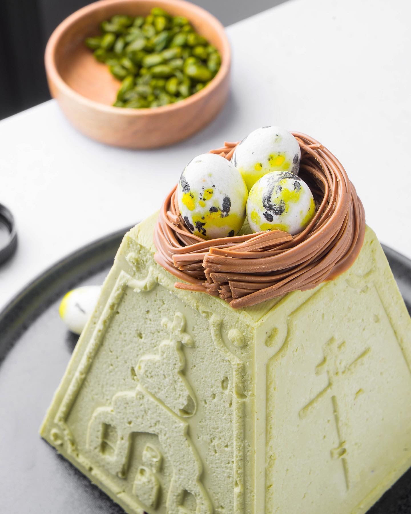

Mon-Fri: 8AM - 8PM Sat-Sun: 9AM - 7PM
Recipes from our chef, who is happy to share them with you! Bon appetit!
Pistachio cheese cake

We all love and respect traditions. But sometimes you want to try something new, right? So I have prepared for you a very unusual recipe for Easter Easter.
Shall we start?
What we need:
9% cheese - 400 g
Butter 82.5% - 100 g
25.9% white chocolate - 200 g
Cream 33% - 100 g
Pistachio paste - 180 g
Rub the cheese 3-4 times through a metal sieve. The consistency of the paste should come out. Add soft butter and beat with a mixer until smooth.
Heat the heavy cream to a boil in a large measuring cup in the microwave. Add white chocolate, stir and add pistachio paste. Mix everything well, but it is better to beat with a blender.
Wrap the cake pan with cling film from the bottom. Place on a flat board. Fill with cheese mass. You can tap the board on the table several times, pressing the form with your fingers to the board (so that the mass does not come out from below).
You can use several small forms to give to loved ones. Leave the pasochka in the freezer overnight.
Decorate to your liking and surprise your guests at Easter dinner!
**** Important: Candied fruits can be added to the pasochka. They will give it a special taste. I would choose cranberries and candied lemon zest
Chocolate sponge cake with chocolate cream with mascarpone

Biscuit is a great solution when you want something sweet. After all, the products you need for cooking can be found in any home. You can experiment with the cream, I suggest cooking on the basis of chocolate and mascarpone.
Ingredients (20 cm in diameter):
Eggs 6 pcs.
Sugar 100 g
Sunflower oil 80 g
Flour 150 g
Cocoa 50 g
Baking powder 18 g
Sugar syrup for impregnation (50 g of cognac, 100 g of water, 80 g of sugar)
Cream:
Dark chocolate 64% 250 g
Cream confectionery 100 g
Mascarpone 250 g
Butter 100 g
Method of cooking:
Let's start traditionally with the dough. Mix eggs with sugar and beat until the volume of the mass increases 3 times and becomes white. Gradually pour in the sunflower oil, immediately see that the mass becomes denser. Mix flour, cocoa and baking powder and add to the sugar-egg mass. Stir not at high speed, but it is even better to use a silicone spatula so that the mass does not settle. Spread in a prepared form, covered with parchment, and bake at 160 degrees for 40 minutes.
Wait 10-15 minutes for the sponge cake to cool down a bit and cut it into three thin cakes. Impregnate cakes with sugar syrup. To prepare it, you need to mix cognac, water and sugar, bring to a boil and cook until the sugar dissolves.
Method of cream preparation: melt chocolate and butter in a water bath at the same time. In parallel, beat the cream until stiff foam, add mascarpone and pour a thin stream of melted chocolate. Importantly! Melt chocolate at a temperature of 70 degrees, no more.
We get the finished chocolate cream and while it is still warm, spread the sponge cake. Additionally, you can pour melted chocolate on top.
Done!
Macarons
Ingredients for the dough:
Sugar 250 g
Water 75 ml
Powdered sugar 325 g
Almond flour 175 g
Protein 180 g
Red dye
Ingredients for the cream:
Cream 200 g
White chocolate 350 g
Butter 100 g
Method of dough preparation:
Combine almond flour with powdered sugar, add 90 g of egg white. Knead the dough with a pastry spatula. We postpone.
Combine sugar and water in a saucepan and make sugar syrup. Heat it to 114 degrees. Don't panic if you don't have a thermometer, just bring to a boil and simmer for another 5 minutes. The temperature will be about what you need.
Beat the remaining (90 g) protein to a stable foam and pour a thin stream into the hot sugar syrup. Now add the dye. And beat for another 5 minutes to make the meringue elastic. Add the whipped proteins to the dough in small portions, mix gently until smooth. The longer you mix, the less dough you will get. Next, spread with a pastry bag on a parchment-lined baking tray round pasta (diameter 2 cm).
And here now very carefully! Take a pan of pasta and knock lightly on the table. Leave for 20 minutes to dry a little.
Bake the pasta in a preheated oven at 130 degrees for 12 minutes. Remove, remove from the pan and wait until completely cooled
The method of preparation of the cream:
Heat the cream and pour it over the chocolate. Leave for 5 minutes. Then mix thoroughly to form a homogeneous mass. Add softened butter, stir and refrigerate until thickened.
When the mass hardens, connect the two halves with cream.
Done!
Let it taste!
Pão de Ló – portuguese dessert
Roughly speaking, Pao de Lo is a lemon sponge cake with custard, but not in a classic serving.
By the way, I will prepare this dessert tomorrow in a restaurant for a dinner of Portuguese cuisine)
Ingredients:
Eggs 8 pcs.
Lemon 4 pcs.
Sugar 300 g
Flour 200 g
Butter 100 g
Sunflower oil 100 g
Powder for cookies 15 g
Method of cooking:
First we bake a biscuit. Beat 5 eggs with half the sugar (150 g) to form a stable white foam. Peel all the lemons and add to the foam. Gradually pour the oil, so the foam is even more stable. Then gradually add flour with baking powder. The dough is ready. Pour into a mold and bake at 160 degrees for 40 minutes.
Custard:
Squeeze fresh lemon juice and mix it with butter, sugar and eggs. All this is brewed on a steam bath to form the consistency of cream.
Using a pastry syringe, start the sponge cake cream. Yes, we are just starting, you are right). Align the top with a pastry spatula so that no holes are visible from the syringe and put the dessert in the refrigerator. When cool, cut and voila - sponge cake sprinkled with cream is ready.
Chocolate fondant

For fondant we take:
Butter 82.5% - 170 g
Dark chocolate - 150 g
Eggs - 6 pcs
Sugar - 150 g
Flour - 140 g
When you can handle the dough, prepare baking tins.
It is desirable to use metal or ceramic molds. The main thing is that each form was separate. Hide the blanks in the refrigerator for 40 minutes. Then preheat the oven to 180 C. Baking time: 20-30 minutes. And voila J
Tip from the Chef: Fondant is a very tasty dessert, especially if done correctly. The most important thing is the baking time. I recommend trying on one cake to understand how much to bake in your oven.
"...And I traditionally invite you to the Bon appétit bakery to enjoy desserts and fragrant coffee."
Thank you for choosing us!